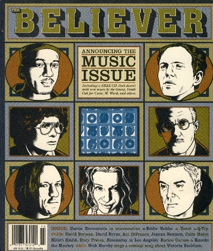

the believer june 2004 music issue

title: the believer june 2004 music issue
format: CD
- the walkmen - the rat
- the gossip - fire/sign
- the mountain goats: palmcorder yajna
- enon - shave
- i love you but i've chosen darkness - the less you see
- the books - there is no there
- the buried beds - camelia
- beulah - you're only king once
- m. ward - vincent o'brien
- papa m - flashlight tornado
- death cab for cutie - title and registration
- young people - ne'er do well
- tv on the radio - dreams
- tiny hawks - you got the right
- the constantines - on to you
- ted leo + pharmacists - tell balgeary, balgury is dead
- alec k. redfearn and the eyesores - mole
- iron & wine - jesus, the mexican boy
please mail any questions/comments/complaints, or just notes hello to:nall@themountaingoats.net